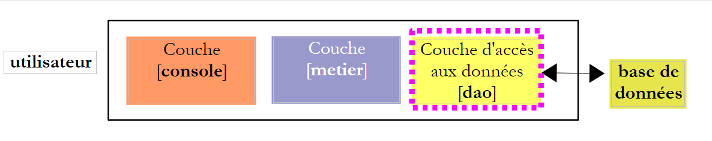

10. Exercise [Tax Calculation] with MySQL
 |
10.1. Transferring a text file to a MySQL table
The following script will transfer data from the following text file:
12620:13190:15640:24740:31810:39970:48360:55790:92970:127860:151250:172040:195000:0
0:0.05:0.1:0.15:0.2:0.25:0.3:0.35:0.4:0.45:0.5:0.55:0.6:0.65
0:631:1290.5:272.5:3309.5:4900:6898.5:9316.5:12106:16754.5:23147.5:30710:39312:49062
in the [impots] table of the following MySQL database [dbimpots]:
 |
The connection to the [dbimpots] database will be made using the credentials (root,"").
We will use the following architecture:
 |
The [console] script we are going to write will use the [ImpotsFile] class to access the data in the text file. Write access to the database will be performed using the methods discussed previously.
The script code is as follows:
# -*- coding=utf-8 -*-
# Import the Impots class module
from impots import *
import re
# --------------------------------------------------------------------------
def copyToMysql(limits, coeffR, coeffN, HOST, USER, PWD, BASE, TABLE):
# Copies the three numerical arrays limits, coeffR, and coeffN
# into the TABLE table in the BASE MySQL database
# the MySQL database is on the HOTE machine
# the user is identified by USER and PWD
# we put the SQL queries in a list
# Delete the table
queries=["drop table %s" % (TABLE)]
# Create the table
query = "create table %s (limits decimal(10,2), coeffR decimal(6,2), coeffN decimal(10,2))" % (TABLE)
queries.append(query)
# populating
for i in range(len(limits)):
# Insert query
queries.append("insert into %s (limits,coeffR,coeffN) values (%s,%s,%s)" % (TABLE,limits[i],coeffR[i],coeffN[i]))
# execute the SQL commands
return executeCommands(HOST, USER, PWD, DATABASE, queries, False, False)
def executeCommands(HOST, ID, PWD, DATABASE, queries, tracking=False, stop=True):
# use the connection (HOST, ID, PWD, DATABASE)
# execute the SQL commands contained in the queries list on this connection
# if tracking=True, then each execution of an SQL command is followed by a message indicating whether it succeeded or failed
# if stop=False, the function stops at the first error encountered; otherwise, it executes all SQL commands
# the function returns a list (number of errors, error1, error2, ...)
# connection
try:
connection = MySQLdb.connect(host=HOST, user=ID, passwd=PWD, db=DATABASE)
except MySQLdb.OperationalError as error:
return [1, "Error connecting to MySQL as (%s,%s,%s,%s): %s" % (HOST, ID, PASSWORD, DATABASE, error)]
# Request a cursor
cursor = connection.cursor()
# execute the SQL queries contained in the queries list
# execute them - initially no errors
errors=[0]
for i in range(len(queries)):
# store the query in a local variable
query = queries[i]
# Is the query empty?
if re.match(r"^\s*$", query):
continue
# execute query i
error=""
try:
cursor.execute(query)
except Exception, error:
pass
# Was there an error?
if error:
# one more error
errors[0] += 1
# error message
msg = "%s: Error (%s)" % (request[0:len(request)-1], error)
errors.append(msg)
# Log to screen or not?
if tracking:
print msg
# Should we stop?
if stop:
return errors
else:
if continued:
# Display the query without the line break
print "%s: Execution successful" % (cutNewLineChar(query))
# information about the result of the executed query
displayInfo(cursor)
# Close connection
try:
connection.commit()
connection.close()
except MySQLdb.OperationalError, error:
# another error
errors[0] += 1
# error message
msg = "%s: Error (%s)" % (query, error)
errors.append(msg)
# return
return errors
# ------------------------------------------------ main
# user identity
USER="root"
PWD=""
# the DBMS host machine
HOST="localhost"
# database name
DATABASE="dbimpots"
# data table name
TABLE="taxes"
# data file
IMPOTS="impots.txt"
# instantiate [dao] layer
try:
dao = ImpotsFile(IMPOTS)
except (IOError, ImpotsError) as info:
print("An error occurred: {0}".format(infos))
sys.exit()
# Transfer the retrieved data to a MySQL table
errors = copyToMysql(dao.limits, dao.coeffR, dao.coeffN, HOST, USER, PWD, BASE, TABLE)
if errors[0]:
for i in range(1, len(errors)):
print errors[i]
else:
print "Transfer completed"
# end
sys.exit()
Notes:
- lines 106–110: we instantiate the [ImpotsFile] class presented in section 8.1;
- line 113: the arrays limites, coeffR, and coeffN are transferred to a MySQL database;
- line 8: the copyToMysql function performs this transfer. The copyToMysql function creates an array of queries to be executed and has them executed by the executerCommandes function, line 25;
- lines 28–89: the executerCommandes function is the one already presented earlier in section 9.7, with one difference: instead of being in a text file, the queries are in a list;
The text file impots.txt:
12620:13190:15640:24740:31810:39970:48360:55790:92970:127860:151250:172040:195000:0
0:0.05:0.1:0.15:0.2:0.25:0.3:0.35:0.4:0.45:0.5:0.55:0.6:0.65
0:631:1290.5:272.5:3309.5:4900:6898.5:9316.5:12106:16754.5:23147.5:30710:39312:49062
Screen results:
Verification with phpMyAdmin:
|
10.2. The tax calculation program
Now that the data needed to calculate the tax is in a database, we can write the tax calculation script. We are again using a three-tier architecture:
 |
The new [dao] layer will be connected to the MySQL DBMS and will be implemented by the [ImpotsMySQL] class. It will provide the [business] layer with the same interface as before, consisting of the single getData method that returns the tuple (limits, coeffR, coeffN). Thus, the [business] layer will remain unchanged from the previous version.
10.3. The [ImpotsMySQL] class
The [dao] layer is now implemented by the following [ImpotsMySQL] class (impots.py file):
class ImpotsMySQL:
# constructor
def __init__(self, HOST, USER, PWD, BASE, TABLE):
# initializes the limits, coeffR, and coeffN attributes
# The data required to calculate the tax has been placed in the MySQL table TABLE
# belonging to the BASE database. The table has the following structure
# limits decimal(10,2), coeffR decimal(10,2), coeffN decimal(10,2)
# the connection to the MySQL database on the HOTE machine is made using the credentials (USER,PWD)
# throws an exception if an error occurs
# Connect to the MySQL database
connection = MySQLdb.connect(host=HOTE, user=USER, passwd=PWD, db=BASE)
# request a cursor
cursor = connection.cursor()
# read the TABLE table in blocks
query="select limits,coeffR,coeffN from %s" % (TABLE)
# execute the query [query] on the database [database] of the connection [connection]
cursor.execute(query)
# process the query result
row = cursor.fetchone()
self.limits = []
self.coeffR = []
self.coeffN = []
while(row):
# current row
self.limits.append(row[0])
self.coeffR.append(row[1])
self.coeffN.append(row[2])
# next row
row = cursor.fetchone()
# disconnect
connection.close()
def getData(self):
return (self.limits, self.coeffR, self.coeffN)
Notes:
- line 18: the SELECT SQL query that retrieves data from the MySQL database. The result rows from the SELECT are then processed one by one using [cursor.fetchone] (lines 22 and 32) to create the limits, coeffR, and coeffN arrays (lines 28–30);
- the getData method of the [dao] layer interface.
10.4. The console script
The console script code (impots_04) is as follows:
# -*- coding=utf-8 -*-
# Import the Impots* class module
from impots import *
# ------------------------------------------------ main
# user identity
USER="root"
PWD=""
# the DBMS host machine
HOST="localhost"
# database name
DATABASE="dbimpots"
# data table name
TABLE="taxes"
# input file
DATA="data.txt"
# output file
RESULTS="results.txt"
# instantiate [business] layer
try:
business=TaxBusiness(TaxMySQL(HOST,USER,PWD,DATABASE,TABLE))
except (IOError, TaxError) as info:
print("An error occurred: {0}".format(infos))
sys.exit()
# The data needed to calculate the tax has been placed in the IMPOTS file
# with one line per table in the form
# val1:val2:val3,...
# reading the data
try:
data = open(DATA, "r")
except:
print "Unable to open the data file [DATA] for reading"
sys.exit()
# Open the results file
try:
results = open(RESULTS, "w")
except:
print "Unable to create the results file [RESULTS]"
sys.exit()
# utilities
u = Utilities()
# process the current line of the data file
line = data.readline()
while(line != ''):
# remove any end-of-line characters
line = u.cutNewLineChar(line)
# retrieve the 3 fields married:children:salary that make up the line
(spouse, children, salary) = line.split(",")
children = int(children)
salary = int(salary)
# Calculate the tax
tax = profession.calculate(spouse, children, salary)
# print the result
results.write("{0}:{1}:{2}:{3}\n".format(spouse, children, salary, tax))
# read a new line
line = data.readline()
# close the files
data.close()
results.close()
Notes:
- Line 23: instantiation of the [dao] and [business] layers;
- The rest of the code is familiar.
The same as with previous versions of the exercise.